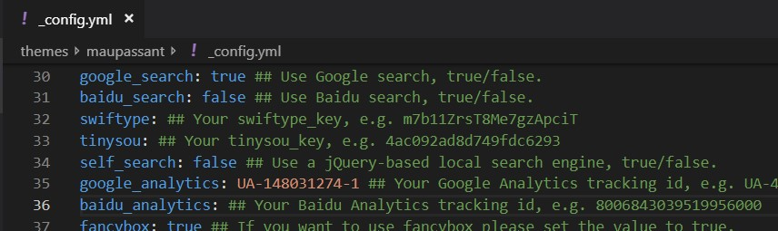

如何在Hexo中嵌入Google Analytics
background
想要了解有没有人对我这个个人博客感兴趣，一开始想到的只是利用lean cloud或者不蒜子做访客统计，后来了解到了Google Analytics，不仅能实现访客统计，还能做各种数据分析（流量分析，用户分析，渠道来源统计等），网站搜索。Google Analytics是属于Traffic Analytics的一种，这类工具可以帮助运营者更好地了解用户的关注点，国内的BAT三巨头也都有Analytics。Google Analytics功能十分强大。只要在网站的页面上加入一段JavaScript跟踪代码，就可以提供非常丰富的图表式报告。现在Gooogle Analytics不仅可以统计网站，也能统计app，现在已经出了一个beta版本同时统计网站和app两种来源。于是决定学习一下Google Analytics。
steps
注册Google Analytics
进入analytics.google.com先注册一个，如下图所示。
填入账号名创建账号。希望衡量的内容选择网站。接着填写网站相关信息。
点击创建。接受条款协议。会自动跳转，接着会看到一个有跟踪ID和JS代码的页面。
嵌入Hexo
本来按照传统的方法，需要将上一步的js代码复制一下，粘贴进themes/landscape/layout/_partial/after-footer.ejs这个文件中。
检查了下我用的主题（Maupassant）的_config.yml中已经有相关设置选项，于是就将跟踪号直接复制进来，如下图所示。

部署上线后，登陆一下自己的blog，立马就发现了一个记录。
实测当前在墙内的环境是可以被统计到的。
关于过滤内部访问
来自内部的点击访问通常会影响到统计结果。可以在GA的设置界面增加过滤器，添加相应的IP规则或者主机名进行过滤。